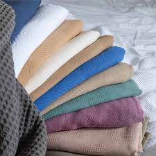

Over 4 decades of textile industry experience,Delivering exquisite fabrics through cutting-edge manufacturing process,Innovative fabric blends and finishes to meet evolving fashion trends,Upholding a tradition of unparalleled commitement to meeting industry demands
BKS Textiles is one of the leading textile solutions provider, with a vertically integrated production facility from yarn dyeing to finishing, producing a range of products from high quality woven fabrics to beautiful hospitl linen product and stylish workwear.We Started with Handloom and power-loom faciities and over the years we have expanded our facilities and over the years we have expanded our facilities to include shuttless weaving,dyeing,printing,finishing and made-ups.Our product range has grown to match evelving fashion trends ,making us a one-stop textile solutions provider.At BKS Textiles we are constantly upgraging our facilities to improve economics,efficiency and quality.Our modern plant in South India utilize green energy and houses cutting edges weaving,processing and finishing machinery,integrating the latest techologies to ensure the best product outcomes. Since its inception in 1983, BKS Textiles has come a long way from producing fabrics to a vertically integrated facility from yarn dyeing and weaving to finishing, we pride ourselves on offering a wide range of premium quality products to our customers. Our range of workwear apparel is perfect for corporate uniforms and industrial wears, while our Hospitality Linen provide a touch of elegance to the hospitality sector. Besides producing the finest quality textile products, we are committed to preserving our planet. We ensure environmental sustainability by utilizing 100% green energy and have an advanced ETP plant that guarantees zero effluent discharge. We work with leading international and domestic brands, as part of R & D, to develop a range of fabrics that are in line with emerging fashion trends. We endure excellent relationships with an extensive business network across domestic and the international markets. We have a loyal clientele with a strong presence across USA, Europe, UAE and the Middle East. BKS Textiles offers exceptional services with a team of highly skilled and motivated textile professionals. We emphasize customer delight and deliver the best textile products on-time at competitive prices.
BKS Textiles is managed by M Senthil Kumar (Managing Director), Sangeetha Velkrishna (Director) and Dr. Sudha Anand (Director) who are highly qualified and experienced professionals with a wealth of knowledge and experience in the textile sector, providing the necessary thought leadership and drive to expand, flourish and achieve new milestones. They are amply supported by a team of young and dynamic workforce who manage the day-to-day operations and drive growth.
1983 – BKS Mills parent company incorporated 2002 – Installed shuttle-less weaving unit 2005 – Installed sewing unit 2007 – Established coating facility 2014 – Modernisation of weaving facility with cutting-edge machinery 2015 – Established continuous processing facilities for fabric 2016 – Integrated yarn dyeing with a capacity of 8000 kg per day
Our vertically integrated facility allows us to produce an eclectic range of textile products with remarkable quality at short-lead times. We offer innovative and top-of-the-line woven solutions with functional finishes and a wide range of prints. BKS Textiles is a vertically integrated facility from yarn dyeing and weaving to finishing, with a modern production facility located in Southern India housing hi-tech machinery and equipment. We source superior-quality yarns to produce the finest woven apparel fabrics, workwear and home textiles to meet the distinct needs of our clients worldwide. We manufacture products with woven fabrics produced in our mills and deliver them to several high-end retailers and brands worldwide. We are meticulous about the products we manufacture and ensure safe working conditions while adhering to rigid quality control measures and ethical practices. At BKS Textiles, we embrace eco-friendly and sustainable practices to guarantee the well-being of our people and environment.
At BKS Textiles, we have the latest yarn dyeing facility powered by green energy and equipped with cutting-edge Fong's dyeing machine, offering a capacity range of 3 Kg to 750 Kg. We also have a lab dispenser and a reliable Monga RF Dyer to ensure that our yarns are dyed to perfection every time. We are approved vendors for some of the biggest names in the industry like Zara, Tesco, Walmart, and M & S.

Our weaving preparatory unit forms the core of our operations, equipped with the latest hi-tech machinery that gives life to our fabrics. Our modern facility houses four automatic warping machines and two multi-cylinder sizing machines that enable us to feed warp to in-house weaving as well as for vendor operations.
Weaving BKS Textiles weaving facility houses Dobby shuttle-less ITEMA Rapier looms, each equipped with 20 shafts and 4 colours, with the capability to produce fabrics up to 345 cm width. Our hi-tech machines enable us to create a variety of weaves, including Twill, Drill, Satin, Percale, Dobby, Satin Band, Oxford, Matt, and much more! To ensure efficiency and the quality of our fabrics, all the looms are connected to an online ‘online data log'loom monitoring system that captures live data. BKS Textiles is dedicated to providing our high-end customers with superior-quality fabrics that are produced, by integrating the latest technology and adherence to rigid quality practices. Supply chain management We have cultivated a well-organized network by collaborating with vendor weaving units, to augment our production capability, including AirJet, Rapier, Sulzer, looms ,to accommodate the shorter lead time requiremnts in peak seasons,to meet customer requirements.
Processing The BKS processing facility located in SIPCOT Perundurai Erode houses cutting-edge machinery, including a Continuous Bleaching Range (CBR), Continuous Dyeing Range (CDR), and Rotary printing machines, to ensure your fabrics are finished to perfection. We can expertly handle greige fabrics up to 78 & and finish up to 72 & and offer a range of processing possibilities on 100% cotton, polycotton, 100% polyester, viscose, poly-viscose, linen, tencel, modal, and blended fabrics.
Our printing facility houses Stormac RD-6 gold make 12-colour rotary printing machine with a printable width of up to 72″. Plus, we use the Smart LEX 7043 with Laser Exposure Technology for delivering high-precision printing, which can expose screens up to 120″ wide, with the capability to produce 50 screens per day. We also have the Climaterizer - Clima 1850, and CAD with the latest version of colour separation software. We are well equipped to handle all kinds of printing, including reactive, pigment, and disperse on various base fabrics like 100% cotton, polycotton, 100% polyester, viscose, linen, etc., with the capacity to produce 29000 metres per day! With the latest technology and high-tech machines, we can cater to all your high-quality printing needs for made-ups and apparel.
Our latest addition to our manufacturing process allows us to produce the best coated technical textiles, with the perfect blend of style and functionality. Our coating division is equipped with advanced machinery that can handle woven fabrics up to 70 & (178 cm) wide and has a production capacity of an impressive 20,000 metres per day.
The BKS sewing facility, houses 100 ultra-modern sewing machines of Juki and Brother make, comprising three thread overlock and single needle machines, special operation machines.
Equipped with modern manufacturing equipment integrating advanced technologies and a full fledged testing labratory we deiver an electric range of innovative products and contemporary designd.BKS Textiles exclusive hospitality divison supplies wide ranging linen of exceptionally high quality to the finest of Hotels And Institutions worldwide.BKS Textiles has a loyal clientele and exports to leading brands in the US and European markets.
Our diverse range of woven fabrics include 100% Cotton,Organic Cotton,Cotton Polyester,Polyester,Viscose,Modal,Tencel,Linen and Bamboo.With a GSM range of 50-500, we can weave percale,Plain Satin,Stripe Satin, Damask, Twill, Dobby, Jacquard, and more. Our skilled team delivers excellent textile finishes, including Loom State Fabrics, Bleached Fabrics, Dyed Fabrics, Coated Fabrics, and Printed Fabrics.BKS Textiles produces superior-quality fabrics that are perfect for producing garments, industrial wear, made-ups, home textiles, and institutional textiles.
We produce a wide range of functional and stylish workwear of high quality that guarantees durability and comfort. From industrial settings to corporate environments, our workwear collections are designed to meet the unique needs of professionals across sectors and meet the demanding conditions of work environments.
.png)
BKS textiles has a modern plant in Tirupur that utilizes green energy and houses cutting-edge weaving,Processing and Finishing machinery ,integrating the latest technologies to ensure the best Product Outcomes
CSR
Sustainability
Gallery-Hospitality Linen
About Us
Contact
Support
Applications
No.2/2316 Kungumalapalyam Pirivu, Naranapuram Post,
Palladam,Tirupur Main Road,
Palladam - 641664
Tamilnadu,India
email:mail@bkstextiles.in
Phone:04255 256789 to 799
Copyright 2024@ BKS Textiles Private Limited.Concept by
.png)